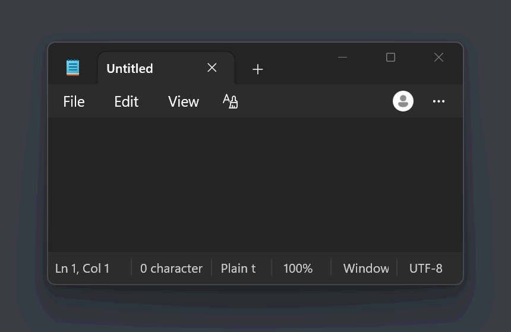

Window Focus Highlighter
Never lose track of where your keyboard focus went. A tiny Windows tray app that briefly highlights whichever window just received focus, then fades out.
Download View on GitHub
Features
- Three styles
Border, tint, or both, with color, opacity, thickness and glow. - Tiny and fast
About 50 KB of plain C. No runtime, no installer, no polling. - Looks native
Follows Windows corner rounding and the light/dark theme. - Follows the window
Tracks moves and resizes while the highlight shows. - Smart filtering
Skips the taskbar, Alt-Tab, Start menu, and your ignore list. - Hotkey
Ctrl+Alt+H pauses and resumes. Optional start with Windows.
Usage
Run WindowFocusHighlighter.exe. It lives in the system tray; double-click the icon to open settings, which apply live with a preview. Requires Windows 10 or later.
Build from source
Install MinGW-w64 and run build.bat. See the README.